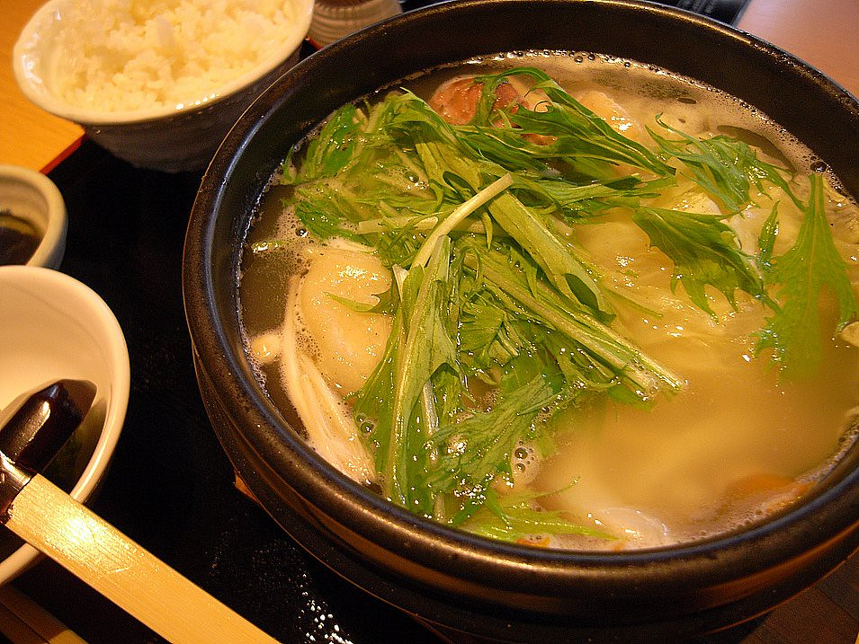

01 / MOTSUNABE
01 / MOTSUNABE牛腸鍋
もつ鍋牛腸的豐潤與蔬菜的清甜，在一鍋裡相遇。
料理示意圖 · 攝影：Ryosuke Hosoi · 授權資訊
用一頓飯的時間，認識一座城市。
從料理出發，收集福岡值得慢慢品嚐的日常滋味。
01 / MOTSUNABE牛腸的豐潤與蔬菜的清甜，在一鍋裡相遇。
料理示意圖 · 攝影：Ryosuke Hosoi · 授權資訊

02 / MIZUTAKI先喝一口雞湯，再慢慢品嚐博多的溫柔滋味。
料理示意圖 · 攝影：Tatsuo Kudo（tkudo） · 授權資訊
拉麵、明太子、甜點與更多在地美食，未來將陸續加入這份美食筆記。